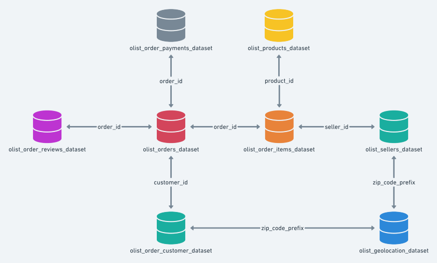
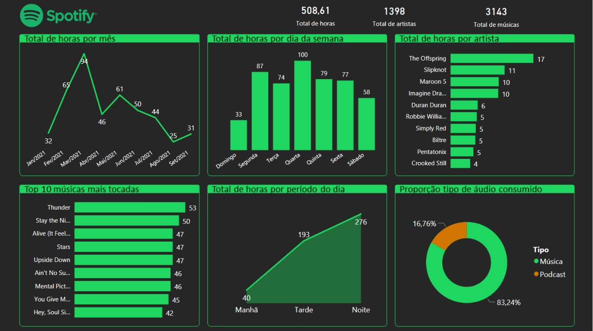
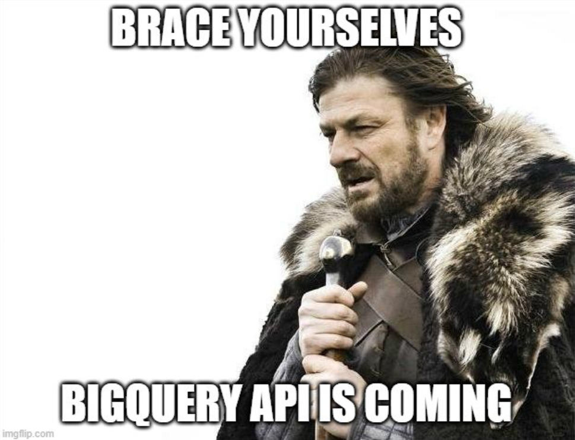

Linguagens de programação e banco de dados
- Python como foco em análise de dados
- Web scraping com python
- SQL para extração de dados
- Banco de dados SQLite, SQL Server, BigQuery
Nessa página eu demonstro as minhas habilidades de resolver problemas de negócio utilizando conceitos e ferramentas de dados, através de dados públicos.
Você vai encontrar também, minhas experiências profissionais, habilidades, ferramentas e conceitos de ciência de dados.
Fique à vontade para entrar em contato através dos links no final da página.

Sou um analista financeiro apaixonado por análise, exploração de dados e algoritmos voltados para melhorar a experiência do cliente. Tenho trabalhado com indicadores financeiros e grande volume de dados há mais de quatro anos. Trabalhei com levantamento, limpeza e criação de indicadores.
Graduado em Administração de Empresas, certificado como Microsoft Excel Specialist e com conhecimentos avançados em inglês.
Atualmente estou me especializando em ciência de dados na Awari e desenvolvendo alguns projetos na área.
Atuei como analista financeiro por mais de 4 anos com rotinas financeiras que consistem em controle de orçamento, gestão de fluxo de caixa e conciliação bancária. Com forte experiência em planejamento financeiro e controles para área administrativa. Participando da implementação do sistema SAP B1 contribuindo com as parametrizações da parte contábil.
Possuo vivência em análise, coleta e manipulação de dados, criação de indicadores financeiros e precificações.

Muitas vezes acabamos lembrando do SQL apenas para consultas em bancos de dados relacionais. Na realidade essa linguagem é capaz de fazer muito mais, o importante é buscar extrair o máximo possível dela sempre. Nesse post vamos responder algumas perguntas de negócio da base de dados Olist, trata-se de uma plataforma de e-commerce brasileira.

Você sabia que pode conferir as suas músicas e artistas mais ouvidos a qualquer momento? Basta solicitar os dados da sua conta. Eles dão um prazo de até 30 dias para o envio. Fiz esse dashboard mostrando algumas informações da minha conta. Período analisado: Jan-2021 a Set-2021.

Que o Pandas é uma biblioteca de python fantástica e muito útil para fazer manipulação e exploração de grandes conjuntos de dados, isso nós já sabemos. No entanto, o objetivo desse post é passar brevemente pelo pandas e ensinar como sincronizar dados CSV no módulo pandas-gbq com o BigQuery.
Sinta-se à vontade para entrar em contato: